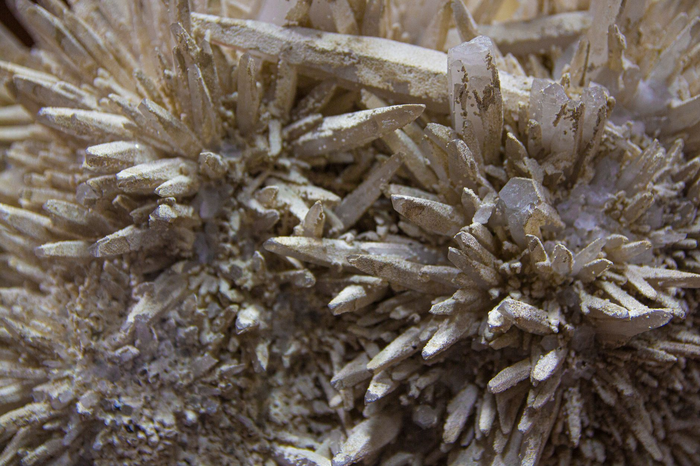

광산 확보보다 수출통제가 빠르다, 자원전쟁 규칙 바뀌었다

중국은 2023년 8월 갈륨·게르마늄, 2023년 12월 흑연, 2024년 이후 안티몬·비스무트 등으로 수출통제 대상을 단계적으로 확대했다. 광산 생산량을 줄이지 않고 '수출 허가제'만으로 공급을 조절하는 방식이다. 갈륨 국제 가격은 통제 이전 대비 9배, 게르마늄은 3배 수준을 유지하고 있다. 중국은 전 세계 갈륨 생산의 약 95%, 게르마늄의 약 80%를 점유한다.
수출 통제의 실제 메커니즘은 2025년 7월 1일 시행된 중국 상무부 공고 제26호에서 더욱 정교해졌다. 이중용도 전략 광물의 불법·부정 수출 신고 체계를 정비해, 제3국 우회 수출 루트까지 사실상 봉쇄하는 구조다. 기존에는 말레이시아·베트남 등을 경유한 우회 조달이 가능했으나, 현재는 원산지 추적이 강화되면서 이 루트의 리스크가 급격히 높아졌다.
소재별 통제 강도에는 차별화가 뚜렷하다. 중국은 2025년 4월 일본향 갈륨 수출을 4개월 만에 재개했으나, 게르마늄은 재개 시점조차 불투명하다. 갈륨은 반도체용 수요가 다변화돼 중국도 수출 봉쇄 시 자국 기업 피해가 생기는 구조인 반면, 게르마늄은 광섬유·야간투시경 등 방위산업 연계 수요가 커 전략적 봉쇄 가치가 더 높다는 판단이 깔려 있다.
미국도 수출통제 카드를 맞받아 쓰고 있다. 엔비디아·AMD AI 반도체의 제3국 수출에 미국 사전 허가를 의무화하는 방안이 추진 중이며, 애플에 중국산 메모리 사용 중단을 공식 압박했다. 광산 채굴권을 두고 다투던 자원전쟁이, 이제는 수출 허가 번호 한 줄로 글로벌 공급망을 재편하는 '제도 전쟁'으로 전환됐다.
이 구조의 핵심은 진입장벽이 '자본'에서 '제도'로 바뀌었다는 점이다. 광산 개발은 수십억 달러와 10년 이상의 시간이 필요하지만, 수출 허가 제도는 공고 하나로 즉시 발효된다. 자원 확보 전략에서 채굴권 투자보다 가공·정제 기술 내재화가 더 빠른 대응 수단이 되는 이유다.
한국이 직면한 구조적 문제는 '소재를 못 만드는 게 아니라, 원료를 못 받는 것'이다. 국내 소재 기업들은 갈륨·게르마늄 가공 기술을 보유하고 있으나, 원료 자체가 중국 수출통제에 묶여 가공 라인이 비어 있다. 고려아연의 갈륨 자체 생산(아연 제련 부산물 활용)이 주목받는 이유는 원료 의존도를 원천적으로 끊는 구조이기 때문이다.
수출통제는 외교 도구이기도 하다. 중국이 일본향 갈륨을 재개한 것은 일본과의 외교 관계 복원 신호였다. 한국에 대한 통제 수위는 현재 일본보다 덜 직접적이지만, 사드 사태(2017) 패턴처럼 외교 마찰 시 즉각 무기화될 수 있다는 리스크는 구조적으로 상존한다.
원료 자급 구조를 갖춘 기업이 이 게임의 진짜 승자다. 고려아연은 아연 제련 공정 부산물에서 갈륨·게르마늄을 동시에 회수하는 구조로, 중국 수출통제의 직접적 영향권에서 벗어날 수 있는 국내 유일 기업이다. 2028년 갈륨 15.5t, 2027년 게르마늄 공정 안정화가 현실화되면 국내 수요(연간 약 20t 추정)의 상당 부분을 대체할 수 있다.
수출통제 우회 가공 허브로 부상한 인도·말레이시아 기업들도 단기 수혜를 누린다. 말레이시아 페낭 기반 소재 가공사들은 중국산 원료를 입고해 가공 후 제3국에 공급하는 구조로 운영돼 왔으나, 중국의 원산지 추적 강화로 이 모델도 위험해지고 있다.
미국·EU의 핵심광물 비축 프로그램 수혜 기업군도 있다. 미국 국방물자생산법(DPA) 자금을 받는 갈륨·게르마늄 정제 기업(MP Materials 등)은 중국 통제 장기화로 사업 가치가 높아진다.
원료 다변화 없이 중국산 단일 소싱 구조를 유지하는 한국 소재 기업들이 가장 직접적인 피해를 받는다. 광섬유·야간투시경·열화상 카메라 등 게르마늄 의존 제품군의 경우, 국내 대체 원료 확보 시점이 2027년 이후라 향후 1~2년이 가장 취약한 구간이다.
수출통제 우회를 위해 말레이시아·베트남 경유 조달 루트에 의존해온 기업은 중국 공고 제26호 이후 계약 리스크가 급등했다. 원산지 위조가 적발될 경우 수입 자체가 차단되는 법적 리스크까지 발생한다.
소재별 중국 의존도를 수치로 파악하는 것이 첫 번째다. 갈륨 95%, 게르마늄 80%, 비스무트 90% 이상이 중국산이라는 사실을 알아도, 자사 제품에서 해당 소재가 어느 공정에 얼마나 들어가는지 모르는 기업이 많다. 소재 단위 중국 의존도 지도를 먼저 그려야 한다.
가공 기술 내재화가 채굴권 투자보다 빠른 대응책이다. 원료를 해외에서 조달하더라도, 국내 정제·가공 능력을 갖추면 중국산 완제품 수입 대비 리스크를 낮출 수 있다. 인도·캐나다·호주에서 원광을 들여와 국내에서 정제하는 구조가 현실적인 대안이다.
수출통제 모니터링을 구매팀 단독 업무로 두는 구조는 위험하다. 중국 상무부 공고, 미국 BIS 규정 변경, EU 전략원자재법(CRMA) 진행 상황이 동시에 소재 조달에 영향을 미친다. 법무·무역규정 전담 인력과 구매팀이 월 1회 이상 정례 브리핑을 공유하는 체계를 갖춰야 한다.
실제 조달 현장에서는 — 수출허가 번호가 없는 중국산 원료 오퍼가 들어올 때, 가격이 시장 대비 15~20% 저렴한 경우가 많다. 이는 허가 없이 밀어내는 물량이거나 원산지 서류가 불완전한 경우다. 단기 가격 이익보다 통관 거절과 법적 제재 리스크가 훨씬 크기 때문에, 오퍼 검토 단계에서 수출허가 번호(EL No.)와 원산지 증명서 동시 제출을 조건으로 명시하는 것이 현장 원칙이 돼야 한다.
이 포스팅은 쿠팡 파트너스 활동의 일환으로 수수료를 제공받습니다.